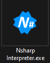
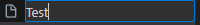
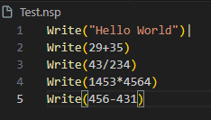

How to Run a Script
- First, open the NSharp (N#) Interpreter. 
- Select your script file.
- Run the script.
- A console will appear to show the output.
How to Script in NSharp
To create a script, you need to follow these steps:
- Create a new file using your favorite text editor. 
- Save the file with the
.nspextension.
Available Features
-
Write(): Used to write output to the console.
Example:
Write("Hello, World!") -
Variables: Variables in NSharp are declared using the
varkeyword.Syntax:
var variableName = valueExamples:
var age = 25(Numeric Variable)var name = "John"(String Variable)
Variables can be used in expressions:
Write("Hello, " .. name) -
Functions: Functions are defined using the
functionkeyword.Syntax:
function functionName()
-- Your code here
endExample:
function greet()
Write("Welcome to NSharp!")
end